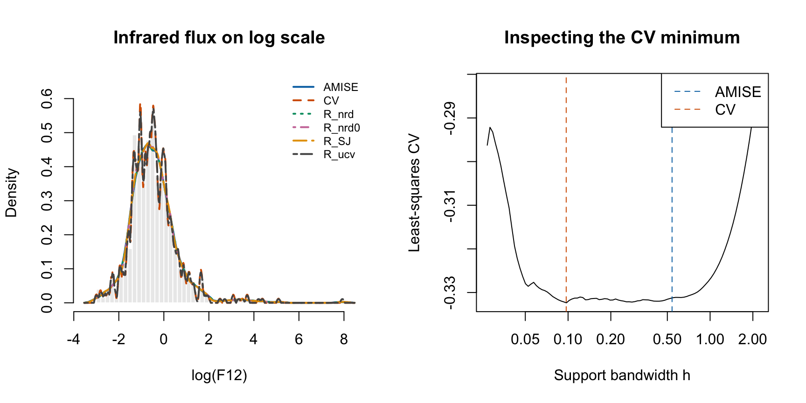
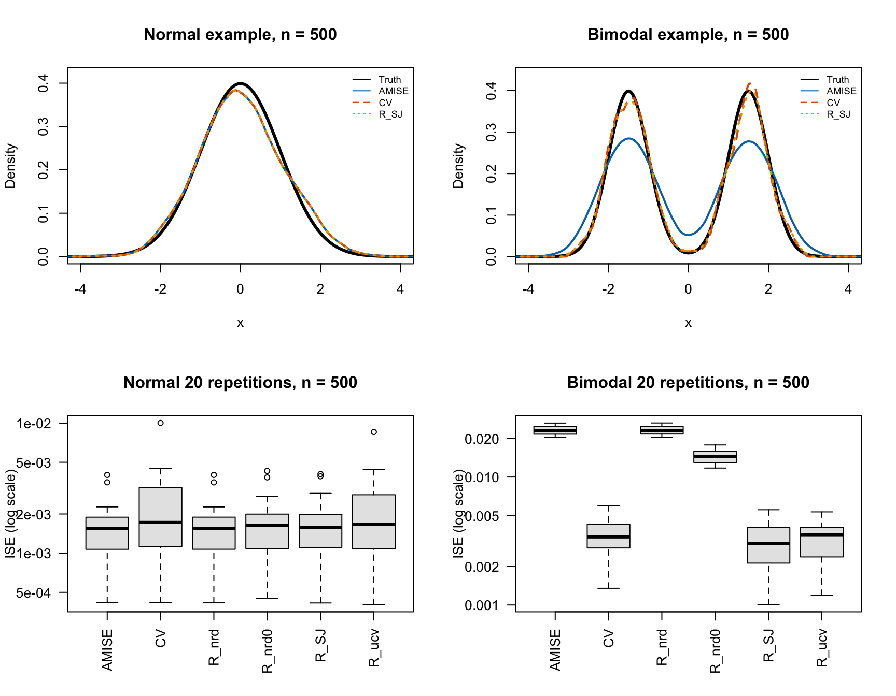

clean_sample <- function(x, na.rm = FALSE, min_n = 1L) {
if (!is.numeric(x) || !is.null(dim(x)))
stop("x must be a numeric vector.")
if (!is.logical(na.rm) || length(na.rm) != 1L || is.na(na.rm))
stop("na.rm must be TRUE or FALSE.")
if (na.rm) x <- x[!is.na(x)]
if (length(x) < min_n || any(!is.finite(x)))
stop("Too few observations, or missing/infinite values in x.")
x
}
positive_scalar <- function(x, name) {
if (!is.numeric(x) || length(x) != 1L || !is.finite(x) || x <= 0)
stop(name, " must be a finite positive number.")
}
epanechnikov <- function(u) {
# Subsetting avoids evaluating a polynomial at very large distances.
ans <- numeric(length(u))
inside <- abs(u) <= 1
ans[inside] <- 0.75 * (1 - u[inside]^2)
ans
}
kde <- function(x, h, grid = NULL, m = 512L,
kernel = epanechnikov, na.rm = FALSE) {
x <- clean_sample(x, na.rm)
positive_scalar(h, "h")
if (is.null(grid)) {
positive_scalar(m, "m")
if (m < 2 || m != floor(m)) stop("m must be an integer >= 2.")
grid <- seq(min(x) - h, max(x) + h, length.out = m)
}
if (!is.numeric(grid) || length(grid) == 0L || any(!is.finite(grid)))
stop("grid must contain finite numeric evaluation points.")
y <- vapply(grid, function(t) mean(kernel((t - x) / h)) / h,
numeric(1))
list(x = grid, y = y, h = h, n = length(x))
}
# Trapezoidal integration on an increasing, possibly nonuniform grid.
trapz <- function(x, y) {
stopifnot(length(x) == length(y), length(x) >= 2L, all(diff(x) > 0))
sum(diff(x) * (head(y, -1) + tail(y, -1)) / 2)
}Assignment 1
Smoothing
Implement and test kernel density estimation and bivariate smoothing spline with bandwidth selection, comparing results to R’s built-in functions.
The first assignment topic is smoothing. If you draw the topic “smoothing” at the oral exam, you will have to present a solution of one of the two assignments below.
For all assignments in the course you should have the following five points in mind:
- How can you test that your implementation is correct?
- Can you implement alternative solutions?
- Can the code be restructured e.g. by modularization, abstraction or object oriented programming to improve generality, extensibility, and readability?
- How does the implementation perform (benchmarking)?
- Where are the bottlenecks (profiling), and what can you do about them?
Some of these points are not covered yet (or you just don’t master them right now), and you may need to return to your solution later in the course to improve and refine it. Moreover, the five points are not independent. Alternative solutions may provide ways of testing the implementation. Restructuring of code may improve or hurt performance. Optimization of performance may improve or hurt readability. And so on.
A: Density Estimation
Implement a kernel density estimator using the Epanechnikov kernel, \[
K(x) = \frac{3}{4}(1 - x^2) 1_{[-1, 1]}(x),
\] and implement two bandwidth-selection methods: an AMISE plug-in method and a cross-validation method. Test your implementation using both real and simulated data, and investigate how the two methods behave. Compare your results with density() and suitable bandwidth selectors provided by R. Make your implementation as general as possible.
Tip
When comparing your implementation with R’s built-in density(), make sure to read the documentation carefully, in particular the documentation of the bw argument.
Approach and course references
The implementation follows the vectorized estimator in the course’s R/kernel.R. Lecture 2 provides the AMISE expression and discusses normal-reference bandwidths and Sheather–Jones selection. The Week 2 solutions, Exercises 2.1–2.5 provide the Epanechnikov constants, the log(F12) example, bandwidth scaling, and benchmarking exercises. The bandwidth selectors below are implemented here from their mathematical criteria; they are not calls to R’s selectors.
All computations use base R. The real data are already available locally in Data/infrared.txt, so rendering does not require a download.
Kernel and density estimator
For observations \(X_1,\ldots,X_n\), define \[ \widehat f_h(t)=\frac{1}{nh}\sum_{i=1}^n K\left(\frac{t-X_i}{h}\right). \] Here \(h\) is the support half-width of each kernel. The Epanechnikov kernel is nonnegative, symmetric, and has \[ \int K(u)\,du=1,\qquad \mu_2(K)=\int u^2K(u)\,du=\frac15,\qquad R(K)=\int K(u)^2\,du=\frac35. \] Thus \(\widehat f_h\) is itself a density. Small \(h\) produces narrow peaks and large sampling variation; large \(h\) smooths more but can obscure structure.
The function accepts any finite numeric sample and either a custom evaluation grid or a grid size. Missing values are removed only when requested. Kernel evaluation and bandwidth selection are separate functions, so the estimator can also accept another vectorized density kernel. For a kernel of unbounded support, supply a suitably wide grid explicitly.
AMISE plug-in bandwidth
Write \(R(f'')=\int f''(t)^2\,dt\). Substituting the kernel constants into the lecture’s bias–variance approximation gives \[ \operatorname{AMISE}(h)=\frac{3}{5nh}+\frac{h^4}{100}R(f''), \qquad h_{\mathrm{AMISE}}=\left(\frac{15}{nR(f'')}\right)^{1/5}. \] Differentiating with respect to \(h\) gives the minimizer. The unknown quantity is the curvature \(R(f'')\): a density with narrow peaks needs a smaller bandwidth.
We implement a normal-reference plug-in method. For a normal reference density with standard deviation \(s\), \(R(f'')=3/(8\sqrt\pi s^5)\), hence \[
\widehat h_{\mathrm{NR}}=(40\sqrt\pi)^{1/5}\widehat s\,n^{-1/5}.
\] By default, \(\widehat s=\min\{\operatorname{sd}(X),\operatorname{IQR}(X)/1.34\}\), using the robust scale convention in Lecture 2; if the IQR is zero we use the standard deviation. Setting robust = FALSE uses the standard deviation alone. This is a simple parametric plug-in estimate of curvature, not the more elaborate Sheather–Jones pilot-derivative method. It can oversmooth multimodal data because a single normal reference does not describe their local curvature. Constant samples have no positive estimated scale, so automatic selection raises an error; the KDE itself still works with a user-supplied positive bandwidth.
bw_amise <- function(x, robust = TRUE, na.rm = FALSE) {
x <- clean_sample(x, na.rm, min_n = 2L)
s <- sd(x)
if (robust && IQR(x) > 0) s <- min(s, IQR(x) / 1.34)
positive_scalar(s, "Estimated scale")
(40 * sqrt(pi))^(1 / 5) * s * length(x)^(-1 / 5)
}Leave-one-out least-squares cross-validation
Expanding the integrated squared error gives \[ \operatorname{ISE}(h)=\int\widehat f_h^2 -2\int\widehat f_h f+\int f^2. \] The last term does not depend on \(h\). Estimate the middle integral by predicting each observation from all the other observations: \[ \operatorname{CV}(h)=\int\widehat f_h(t)^2\,dt -\frac{2}{n}\sum_{i=1}^n\widehat f_{h,-i}(X_i),\qquad \widehat f_{h,-i}(X_i)=\frac{1}{(n-1)h}\sum_{j\ne i}K\left(\frac{X_i-X_j}{h}\right). \] For independent observations, its expectation equals MISE minus \(\int f^2\). Including the observation itself in the second term would reward narrow spikes at the data points and is therefore incorrect. Negative CV scores are possible: the constant \(\int f^2\) has been omitted.
For this symmetric kernel let \(C(v)=\int K(u)K(u+v)\,du\). Direct integration of the two quadratic polynomials over their overlapping supports gives, with \(a=|v|\), \[ C(v)=\frac{3}{160}(2-a)^3(a^2+6a+4)\,1_{\{a\le2\}}. \] Consequently we can evaluate the first integral exactly, without an integration grid. Storing just the distances \(d_{ij}=|X_i-X_j|\) for \(i<j\) gives \[ \operatorname{CV}(h)= \frac{nC(0)+2\sum_{i<j}C(d_{ij}/h)}{n^2h} -\frac{4\sum_{i<j}K(d_{ij}/h)}{n(n-1)h}. \] The diagonal belongs in the first term only. Repeated observations remain separate observations, even when their pairwise distance is zero.
epan_convolution <- function(v) {
a <- abs(v)
ans <- numeric(length(a))
inside <- a <= 2
z <- a[inside]
ans[inside] <- 3 / 160 * (2 - z)^3 * (z^2 + 6 * z + 4)
ans
}
make_cv_score <- function(x, na.rm = FALSE) {
x <- clean_sample(x, na.rm, min_n = 2L)
n <- length(x)
distances <- as.vector(dist(x))
function(h) {
positive_scalar(h, "h")
u <- distances / h
(n * 3 / 5 + 2 * sum(epan_convolution(u))) / (n^2 * h) -
4 * sum(epanechnikov(u)) / (n * (n - 1) * h)
}
}
bw_cv <- function(x, interval = NULL, n_grid = 100L, na.rm = FALSE) {
x <- clean_sample(x, na.rm, min_n = 2L)
if (is.null(interval)) interval <- bw_amise(x) * c(0.05, 4)
if (!is.numeric(interval) || length(interval) != 2L ||
any(!is.finite(interval)) || interval[1] <= 0 ||
interval[2] <= interval[1]) stop("Invalid positive search interval.")
positive_scalar(n_grid, "n_grid")
if (n_grid < 3 || n_grid != floor(n_grid))
stop("n_grid must be an integer >= 3.")
score <- make_cv_score(x)
log_h <- seq(log(interval[1]), log(interval[2]), length.out = n_grid)
values <- vapply(exp(log_h), score, numeric(1))
# CV need not be unimodal: refine every local minimum detected on the grid.
middle <- seq.int(2L, n_grid - 1L)
local <- middle[values[middle] <= values[middle - 1L] &
values[middle] <= values[middle + 1L]]
refined <- vapply(local, function(i) {
optimize(function(z) score(exp(z)), log_h[c(i - 1L, i + 1L)],
tol = 1e-6)$minimum
}, numeric(1))
candidates <- exp(c(log_h, refined))
scores <- c(values, vapply(exp(refined), score, numeric(1)))
best <- which.min(scores)
h <- candidates[best]
boundary <- h <= interval[1] * (1 + 1e-5) ||
h >= interval[2] * (1 - 1e-5)
if (boundary) warning("CV minimum is at a search boundary; inspect/expand interval.")
list(h = h, score = scores[best], boundary = boundary,
curve = data.frame(h = exp(log_h), CV = values), interval = interval)
}The search is over a broad interval relative to the plug-in bandwidth, on a log scale so small bandwidths are resolved. Grid search followed by local refinement reduces the risk of choosing the wrong local minimum, but does not prove global optimality. The returned curve and boundary flag make the search inspectable; interval and n_grid can be changed. With many ties, CV can favor bandwidths approaching zero, so a boundary result should not be interpreted as a reliable positive optimum. The method assumes continuous, independent observations.
Correctness checks and comparison with density()
R’s ?density defines bw as the standard deviation of the smoothing kernel. Our scaled kernel has variance \(h^2/5\), so an identical Epanechnikov estimate requires density(x, bw = h / sqrt(5), kernel = "epanechnikov"). The two methods should be close, rather than bitwise equal, because R bins the data and uses an FFT approximation. This is the scaling issue in Exercise 2.3.
We test kernel moments, normalization, a direct double-loop implementation, translation/scale equivariance, input handling, and the CV formula against numerical integration plus explicit leave-one-out refits. The latter check is independent of the convolution implementation.
moments <- c(
mass = integrate(epanechnikov, -1, 1)$value,
mean = integrate(function(u) u * epanechnikov(u), -1, 1)$value,
second = integrate(function(u) u^2 * epanechnikov(u), -1, 1)$value,
squared = integrate(function(u) epanechnikov(u)^2, -1, 1)$value
)
stopifnot(max(abs(moments - c(1, 0, 1 / 5, 3 / 5))) < 1e-10)
x_test <- c(-1.3, -0.2, -0.2, 0.7, 1.6)
h_test <- 0.8
t_test <- seq(-2.5, 2.8, length.out = 501)
direct <- numeric(length(t_test))
for (i in seq_along(t_test)) {
for (j in seq_along(x_test)) {
u <- (t_test[i] - x_test[j]) / h_test
if (abs(u) <= 1) direct[i] <- direct[i] + 0.75 * (1 - u^2)
}
}
direct <- direct / (length(x_test) * h_test)
fit_test <- kde(x_test, h_test, grid = t_test)
stopifnot(max(abs(direct - fit_test$y)) < 1e-12,
all(fit_test$y >= 0),
max(abs(kde(3 + 2 * x_test, 2 * h_test,
grid = 3 + 2 * t_test)$y - fit_test$y / 2)) < 1e-12)
fine <- kde(x_test, h_test, m = 20001)
stopifnot(abs(trapz(fine$x, fine$y) - 1) < 1e-6)
stopifnot(isTRUE(all.equal(kde(c(x_test, NA), h_test, na.rm = TRUE),
kde(x_test, h_test))))
throws <- function(expr) inherits(tryCatch(expr, error = identity), "error")
stopifnot(throws(kde(x_test, 0)), throws(kde(c(1, NA), 1)),
throws(kde(c(1, Inf), 1)), throws(bw_amise(rep(1, 5))),
throws(bw_cv(1)))
# Integrate piecewise at all kernel boundaries to avoid missing narrow pieces.
numerical_cv <- function(x, h) {
knots <- sort(unique(c(x - h, x + h)))
square_integral <- sum(vapply(seq_len(length(knots) - 1L), function(i) {
integrate(function(t) kde(x, h, grid = t)$y^2,
knots[i], knots[i + 1L], rel.tol = 1e-9)$value
}, numeric(1)))
loo <- vapply(seq_along(x), function(i) {
kde(x[-i], h, grid = x[i])$y
}, numeric(1))
square_integral - 2 * mean(loo)
}
cv_check <- vapply(c(0.15, 0.8, 2), function(h) {
abs(make_cv_score(x_test)(h) - numerical_cv(x_test, h))
}, numeric(1))
stopifnot(max(cv_check) < 1e-7)
cat("All correctness checks passed.\n")All correctness checks passed.Real data: infrared flux
Following Exercise 2.2, estimate the density of \(Y=\log(F12)\). This is the density on the log scale; a density on the original positive flux scale would be \(\widehat f_{F12}(z)=\widehat f_Y(\log z)/z\) for \(z>0\).
# Support both rendering from Assignments/ and running chunks from the project root.
data_paths <- c("../Data/infrared.txt", "Data/infrared.txt")
data_path <- data_paths[file.exists(data_paths)][1]
if (is.na(data_path)) stop("Cannot find Data/infrared.txt.")
infrared <- read.table(data_path, header = TRUE)
stopifnot(all(is.finite(infrared$F12)), all(infrared$F12 > 0))
x_real <- log(infrared$F12)
h_real <- bw_amise(x_real)
cv_real <- bw_cv(x_real)
# Compare the actual KDEs at identical bandwidths and identical grid points.
r_fit <- density(x_real, bw = h_real / sqrt(5), kernel = "epanechnikov",
from = min(x_real) - h_real, to = max(x_real) + h_real, n = 4096)
own_fit <- kde(x_real, h_real, grid = r_fit$x)
max_difference <- max(abs(own_fit$y - r_fit$y))
stopifnot(max_difference < 1e-3 * max(own_fit$y))
data.frame(n = length(x_real), distinct = length(unique(x_real)),
h_AMISE = h_real, h_CV = cv_real$h,
CV_boundary = cv_real$boundary, max_density_difference = max_difference) n distinct h_AMISE h_CV CV_boundary max_density_difference
1 628 215 0.5396474 0.09704552 FALSE 0.0001036881Comparing bandwidth selectors on a common scale
R’s bw.nrd(), bw.nrd0(), bw.SJ(), and bw.ucv() are Gaussian-kernel selectors (see ?bw.nrd). To transfer their bandwidths \(b_G\) to our kernel, use the ratio of the AMISE constants: \[
h_E=\left(\frac{R(K_E)/\mu_2(K_E)^2}
{R(K_G)/\mu_2(K_G)^2}\right)^{1/5}b_G
=(30\sqrt\pi)^{1/5}b_G.
\] For bw.ucv() we explicitly use the same search interval as our selector, converted to Gaussian units, and tighten the numerical tolerance. R’s default interval produced boundary warnings in preliminary runs on these simulations. R still uses its own binned Gaussian objective and optimization algorithm.
This conversion transfers an AMISE smoothing scale; it does not turn a Gaussian CV optimizer into the exact Epanechnikov CV optimizer. Once \(h_E\) is chosen, h_E / sqrt(5) is the bandwidth to pass to R’s Epanechnikov density().
gaussian_to_epan <- (30 * sqrt(pi))^(1 / 5)
select_bandwidths <- function(x, cv = bw_cv(x)) {
c(AMISE = bw_amise(x), CV = cv$h,
R_nrd = gaussian_to_epan * bw.nrd(x),
R_nrd0 = gaussian_to_epan * bw.nrd0(x),
R_SJ = gaussian_to_epan * bw.SJ(x),
R_ucv = gaussian_to_epan * bw.ucv(x,
lower = cv$interval[1] / gaussian_to_epan,
upper = cv$interval[2] / gaussian_to_epan,
tol = 1e-6 * bw.nrd(x)))
}
real_bandwidths <- select_bandwidths(x_real, cv_real)
data.frame(method = names(real_bandwidths), h = unname(real_bandwidths),
R_epanechnikov_bw = unname(real_bandwidths) / sqrt(5)) method h R_epanechnikov_bw
1 AMISE 0.53964742 0.24133766
2 CV 0.09704552 0.04340008
3 R_nrd 0.54004285 0.24151451
4 R_nrd0 0.45852695 0.20505949
5 R_SJ 0.47135390 0.21079587
6 R_ucv 0.10886510 0.04868595# The small difference from bw.nrd is its rounded Gaussian constant 1.06.
stopifnot(abs(h_real / real_bandwidths["R_nrd"] - 1) < 0.001)old_par <- par(mfrow = c(1, 2))
cols <- c("#0072B2", "#D55E00", "#009E73", "#CC79A7", "#E69F00", "#555555")
grid_real <- seq(min(x_real) - max(real_bandwidths),
max(x_real) + max(real_bandwidths), length.out = 1024)
real_curves <- vapply(real_bandwidths, function(h) {
kde(x_real, h, grid = grid_real)$y
}, numeric(length(grid_real)))
hist(x_real, probability = TRUE, breaks = "FD", col = "grey92", border = "white",
main = "Infrared flux on log scale", xlab = "log(F12)",
xlim = range(grid_real), ylim = c(0, max(real_curves) * 1.1))
matlines(grid_real, real_curves, col = cols, lty = seq_along(cols), lwd = 2)
legend("topright", names(real_bandwidths), col = cols, lty = seq_along(cols),
lwd = 2, cex = 0.75, bty = "n")
plot(cv_real$curve, type = "l", log = "x", xlab = "Support bandwidth h",
ylab = "Least-squares CV", main = "Inspecting the CV minimum")
abline(v = c(h_real, cv_real$h), col = cols[1:2], lty = 2)
legend("topright", c("AMISE", "CV"), col = cols[1:2], lty = 2, bg = "white")
par(old_par)For this sample, the CV bandwidth is 0.18 times the normal-reference bandwidth. The curves show which features persist across smoothing choices. AMISE and the converted bw.nrd() nearly coincide because they use the same reference scale. There is no known true flux density here, so visual appearance alone cannot establish which method has the smallest error. There are 628 observations but only 215 distinct log flux values. CV chooses about 0.097 versus 0.54 for AMISE, producing many more small peaks. The CV curve is shallow over a substantial bandwidth range, and repeated recorded values can encourage small bandwidths. Thus those additional peaks should not automatically be interpreted as separate physical populations.
Simulated data: accuracy and variability
Lecture 2 suggests Gaussian mixtures to investigate bandwidth selection. We use both \(N(0,1)\) and the separated mixture \(0.5N(-1.5,0.5^2)+0.5N(1.5,0.5^2)\). The normal case suits the reference assumption; the mixture has much sharper local features than its overall spread suggests.
For each distribution and \(n\in\{200,500\}\), repeat the experiment 20 times with a fixed seed. Every method uses the same sample and the same Epanechnikov KDE. Numerically integrated squared errors are computed on a grid covering both the KDE supports and essentially all of the true density. Mean ISE estimates MISE; the Monte Carlo standard error records the uncertainty from these 20 repetitions. These are illustrative experiments, not precise universal rankings.
set.seed(20260910)
simulations <- list(
Normal = list(r = function(n) rnorm(n), d = dnorm),
Bimodal = list(
r = function(n) rnorm(n, mean = sample(c(-1.5, 1.5), n, replace = TRUE), sd = 0.5),
d = function(t) 0.5 * dnorm(t, -1.5, 0.5) + 0.5 * dnorm(t, 1.5, 0.5)
)
)
B <- 20L
rows <- list()
examples <- list()
for (case in names(simulations)) {
model <- simulations[[case]]
for (n in c(200L, 500L)) {
for (b in seq_len(B)) {
x <- model$r(n)
cv <- bw_cv(x)
hs <- select_bandwidths(x, cv)
grid <- seq(min(-8, min(x) - max(hs)), max(8, max(x) + max(hs)),
length.out = 2048)
truth <- model$d(grid)
estimates <- vapply(hs, function(h) kde(x, h, grid = grid)$y,
numeric(length(grid)))
ise <- apply(estimates, 2, function(y) trapz(grid, (y - truth)^2))
rows[[length(rows) + 1L]] <- data.frame(
distribution = case, n = n, repetition = b,
method = names(hs), h = unname(hs), ISE = unname(ise),
CV_boundary = cv$boundary
)
if (n == 500L && b == 1L)
examples[[case]] <- list(grid = grid, truth = truth, estimates = estimates)
}
}
}
simulation_results <- do.call(rbind, rows)
groups <- split(simulation_results, interaction(simulation_results$distribution,
simulation_results$n, simulation_results$method, drop = TRUE))
simulation_summary <- do.call(rbind, lapply(groups, function(d) {
data.frame(distribution = d$distribution[1], n = d$n[1], method = d$method[1],
mean_h = mean(d$h), sd_h = sd(d$h),
mean_ISE = mean(d$ISE), MCSE = sd(d$ISE) / sqrt(nrow(d)))
}))
rownames(simulation_summary) <- NULL
simulation_summary <- simulation_summary[order(simulation_summary$distribution,
simulation_summary$n, simulation_summary$mean_ISE), ]
print(simulation_summary, digits = 3, row.names = FALSE) distribution n method mean_h sd_h mean_ISE MCSE
Bimodal 200 R_SJ 0.525 0.0345 0.00742 0.000810
Bimodal 200 R_ucv 0.485 0.0924 0.00808 0.000765
Bimodal 200 CV 0.463 0.1091 0.00842 0.000837
Bimodal 200 R_nrd0 1.088 0.0252 0.02594 0.000970
Bimodal 200 AMISE 1.280 0.0296 0.03892 0.000976
Bimodal 200 R_nrd 1.281 0.0296 0.03899 0.000976
Bimodal 500 R_SJ 0.420 0.0183 0.00307 0.000256
Bimodal 500 R_ucv 0.381 0.0590 0.00327 0.000239
Bimodal 500 CV 0.370 0.0761 0.00349 0.000280
Bimodal 500 R_nrd0 0.912 0.0117 0.01453 0.000415
Bimodal 500 AMISE 1.073 0.0138 0.02326 0.000416
Bimodal 500 R_nrd 1.074 0.0138 0.02331 0.000416
Normal 200 R_nrd 0.794 0.0417 0.00342 0.000490
Normal 200 AMISE 0.793 0.0416 0.00342 0.000490
Normal 200 R_nrd0 0.674 0.0354 0.00375 0.000546
Normal 200 R_SJ 0.768 0.0813 0.00377 0.000623
Normal 200 R_ucv 0.843 0.1958 0.00461 0.000864
Normal 200 CV 0.794 0.2052 0.00487 0.001045
Normal 500 R_nrd 0.665 0.0249 0.00164 0.000196
Normal 500 AMISE 0.664 0.0249 0.00164 0.000197
Normal 500 R_SJ 0.656 0.0549 0.00173 0.000214
Normal 500 R_nrd0 0.564 0.0212 0.00175 0.000219
Normal 500 R_ucv 0.687 0.1643 0.00229 0.000420
Normal 500 CV 0.648 0.1760 0.00241 0.000484cat("CV boundary selections:", sum(simulation_results$CV_boundary &
simulation_results$method == "CV"), "\n")CV boundary selections: 0 old_par <- par(mfrow = c(2, 2))
for (case in names(examples)) {
ex <- examples[[case]]
plot(ex$grid, ex$truth, type = "l", lwd = 3, xlim = c(-4, 4),
ylim = c(0, max(ex$truth, ex$estimates) * 1.05),
main = paste(case, "example, n = 500"), xlab = "x", ylab = "Density")
matlines(ex$grid, ex$estimates[, c("AMISE", "CV", "R_SJ")],
col = cols[c(1, 2, 5)], lty = 1:3, lwd = 2)
legend("topright", c("Truth", "AMISE", "CV", "R_SJ"),
col = c("black", cols[c(1, 2, 5)]), lty = c(1, 1:3), cex = 0.7, bty = "n")
}
for (case in names(simulations)) {
d <- subset(simulation_results, distribution == case & n == 500)
boxplot(ISE ~ method, data = d, log = "y", las = 2, col = "grey90",
main = paste(case, "20 repetitions, n = 500"),
xlab = "", ylab = "ISE (log scale)")
}
par(old_par)In this experiment at \(n=500\), mean ISE is approximately 0.00164 for AMISE and 0.00241 for CV under the normal model. For the mixture, the corresponding values are 0.02326 and 0.00349: CV reduces mean error by about 85%. The example plot explains the difference: the normal-reference bandwidth flattens the two peaks and fills the valley between them. Under the normal model the bandwidth standard deviation is about 0.025 for AMISE versus 0.176 for CV. Both methods have lower mean ISE at \(n=500\) than at \(n=200\) in these experiments.
The comparison distinguishes accuracy (mean ISE) from stability (variation of the chosen bandwidths). A stable normal-reference rule can still be systematically too smooth for a mixture. CV estimates the error criterion from the sample and can adapt to multiple peaks, but its selected bandwidth can fluctuate. The table reports both properties, including the results at the larger sample size. R_SJ is a useful more flexible plug-in baseline; R_ucv uses Gaussian least-squares CV before the scale conversion, so equality with our exact Epanechnikov CV selector is not expected.
Performance, alternatives, and bottlenecks
The course’s Lecture 3 compares direct, vectorized, and binned estimators. Our KDE vectorizes the sum over observations and uses \(O(nm)\) work for \(m\) grid points, with \(O(n+m)\) working memory. A fully vectorized outer(grid, x, "-") alternative needs \(O(nm)\) memory; removing a visible loop does not by itself improve performance. R’s density() approximates the calculation by binning and FFT convolution.
The normal-reference selector needs only sample summaries. Our CV implementation stores \(n(n-1)/2\) distances once and reuses them, but still needs \(O(n^2)\) memory and \(O(qn^2)\) work for \(q\) candidate evaluations. For large samples this is the main limitation. Blockwise pair summation could reduce memory; binned distances could reduce runtime at the cost of approximation, as in R’s selectors.
The following reproducible benchmark uses a common grid and the same kernel bandwidth. Repeated calls improve the resolution of the base R timer. The CV timing includes selection; the density timings measure evaluation with a fixed bandwidth. These are different tasks and their times should be read accordingly.
set.seed(42)
bench_x <- rnorm(2048)
time_ms <- function(f, times) {
f() # Warm up before measuring.
median(replicate(3, {
unname(system.time(for (i in seq_len(times)) f())["elapsed"]) * 1000 / times
}))
}
benchmark <- do.call(rbind, lapply(c(128, 512, 2048), function(n) {
x <- bench_x[seq_len(n)]
grid <- seq(min(x) - 0.5, max(x) + 0.5, length.out = 512)
data.frame(n = n,
KDE_ms = time_ms(function() kde(x, 0.5, grid = grid), 10),
R_density_ms = time_ms(function() density(x, bw = 0.5 / sqrt(5),
kernel = "epanechnikov", from = min(grid), to = max(grid), n = 512), 100),
AMISE_ms = time_ms(function() bw_amise(x), 100),
CV_ms = time_ms(function() bw_cv(x, n_grid = 50), 1))
}))
print(benchmark, digits = 3, row.names = FALSE) n KDE_ms R_density_ms AMISE_ms CV_ms
128 1.3 0.07 0.04 8
512 2.3 0.06 0.05 133
2048 5.4 0.07 0.07 2719A short sampling profile identifies where the selector spends time on this machine. Temporary profiler output is cleaned up after reading it. Sampling percentages vary between runs. We report self time to identify where computation actually occurs, rather than the surrounding Quarto execution calls.
profile_cv <- function(x) {
path <- tempfile(fileext = ".out")
on.exit({ Rprof(NULL); unlink(path) }, add = TRUE)
Rprof(path, interval = 0.005)
for (i in seq_len(3)) invisible(bw_cv(x, n_grid = 50))
Rprof(NULL)
head(summaryRprof(path)$by.self, 8)
}
profile_cv(bench_x[1:1024]) self.time self.pct total.time total.pct
"epan_convolution" 0.600 40.27 0.680 45.64
"epanechnikov" 0.420 28.19 0.505 33.89
"sum" 0.260 17.45 0.260 17.45
"abs" 0.105 7.05 0.105 7.05
"numeric" 0.060 4.03 0.060 4.03
"score" 0.030 2.01 0.875 58.72
"FUN" 0.010 0.67 1.485 99.66
"dist" 0.005 0.34 0.005 0.34The implementation separates validation, kernel evaluation, bandwidth selection, and diagnostics. This makes it possible to test each mathematical component and to replace a costly component later. In particular, the numerical CV check provides a reference for any future binned or blockwise implementation.